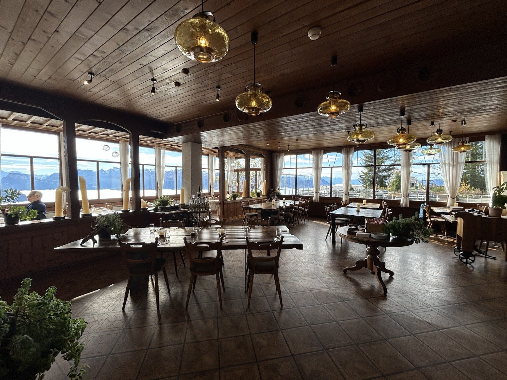
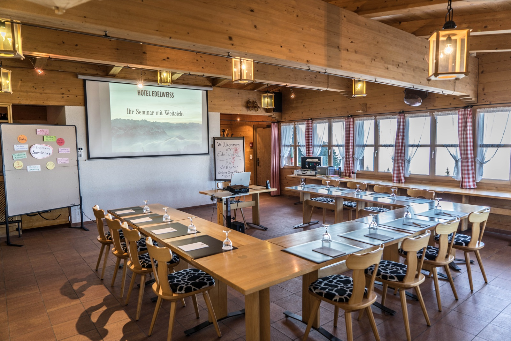
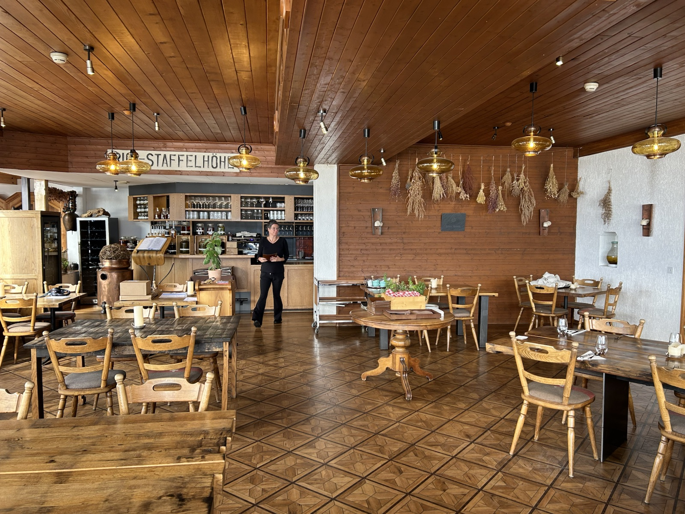
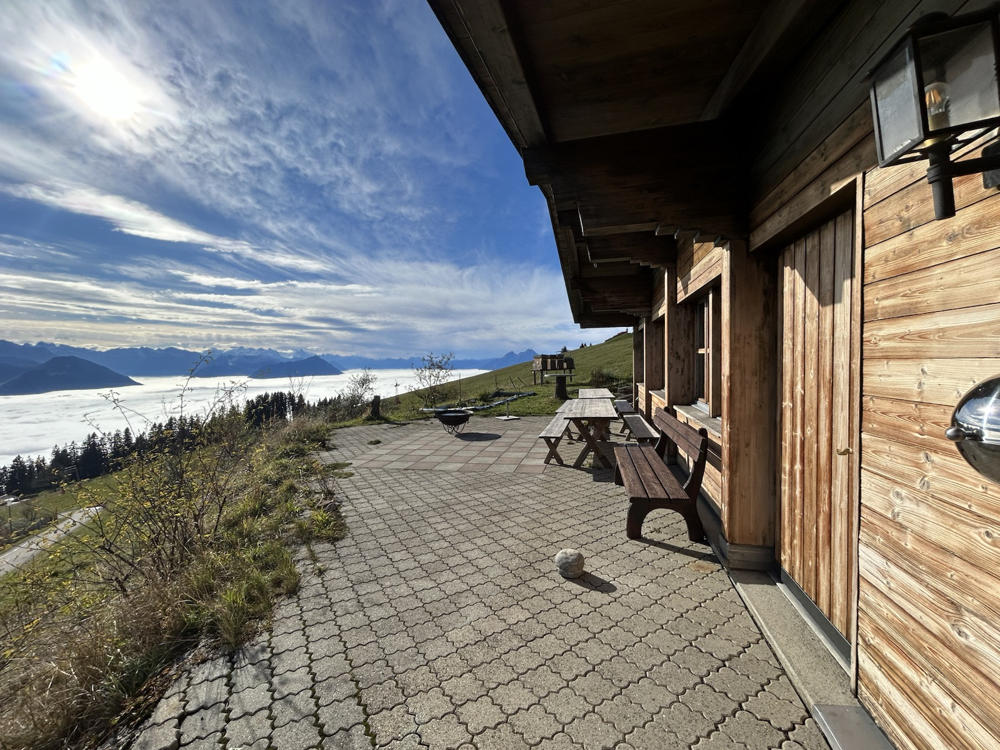

Mount Rigi
Kräuterhotel Edelweiss
The workshop takes place at Kräuterhotel Edelweiss on Mount Rigi, Switzerland. There is no road access: you cannot get a taxi to the hotel or drive directly there. The hotel can be reached either on foot from Vitznau or by taking the mountain railway to Rigi Staffelhöhe, followed by an approximately 50-metre walk.

Workshop setting
Focused and coordinated joint discussions
The three-day format is designed for intensive methodological discussion among a small group, combining prepared scientific talsk, plenary discussion and work in break-out groups.
We will also eat together and make sure, there is enough time for informal exchange and enjoying the Swiss mountain scenery.
We want this workshop to provide a safe environment for spontaneous, creative and open scientific exchange. It will therefore generally not be livestreamed, recorded or available for online participation. The only exception is the plenary session on the first morning, which will be recorded only for workshop participants whose delayed arrival is known to the organisers.
Venue context
The hotel’s approach to food and sourcing
Kräuterhotel Edelweiss is located at Staffelhöhe, 1,550 metres above sea level. Its kitchen uses exclusively raw materials grown in Switzerland and prioritises products from the surrounding region. It also uses herbs from its own alpine herb garden, including varieties that are now rarely used.
In its published philosophy, the hotel connects food sourcing with production conditions, fertile soils, animal welfare and environmental impacts, and identifies traditional processing methods and careful use of local resources as guiding principles.
Venue impressions
The seminar room is located in a small chalet nearby and provides "Weitblick" - vision, or foresight.


